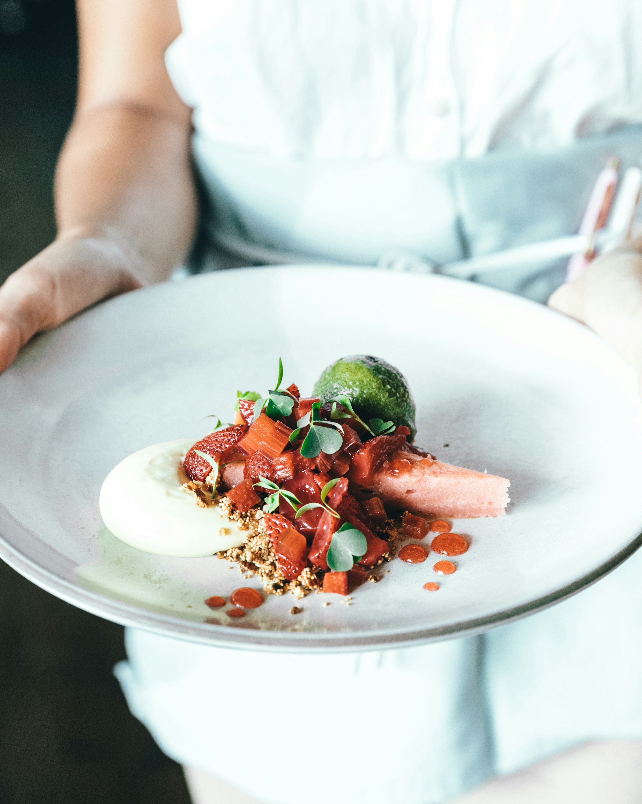

Taniti currently has 10 restaurants: five serve mostly local fish and rice, three serve American-style meals, and two serve Pan-Asian cuisine. The island also has Taniti has two supermarkets, two smaller grocery stores, and one convenience store that is open 24 hours a day.

- Dish: Baron's Ribs
- Cusine: Malaysian
- Restaurant: Taniti Baron

- Dish: Seared Steak n' Veggies
- Cusine: American
- Restaurant: Beachback

- Dish: A Slice of Life
- Cusine: Italian
- Restaurant: Meg's Itali

- Dish: Deviled Panini
- Cusine: Italian
- Restaurant: The Bread Shoppe